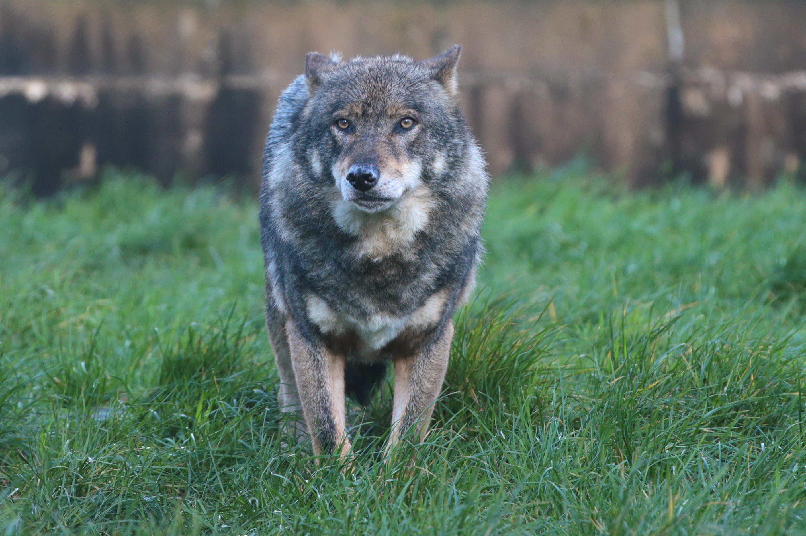
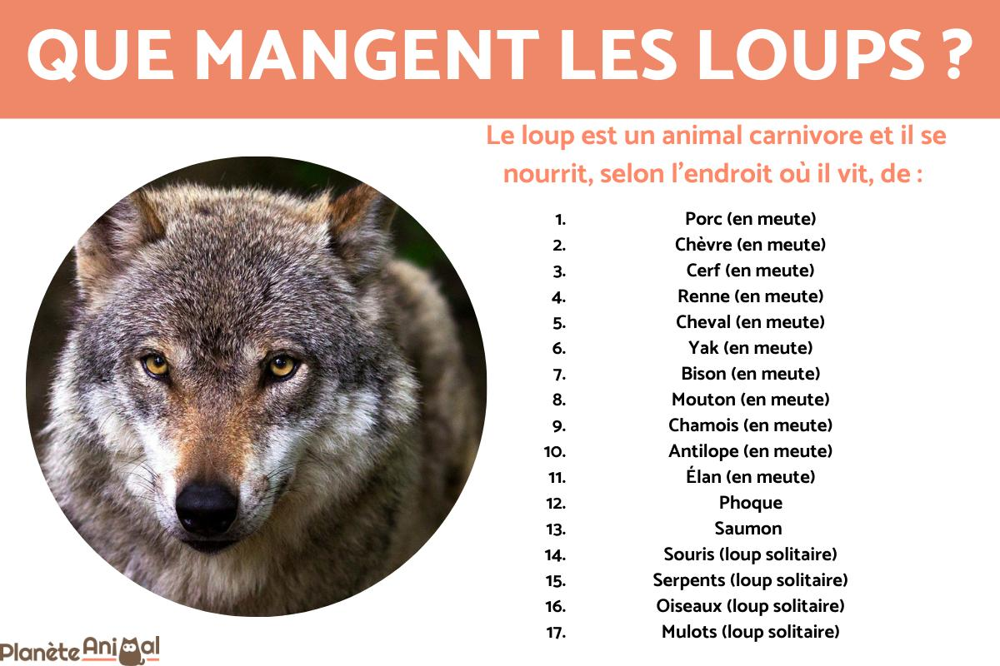
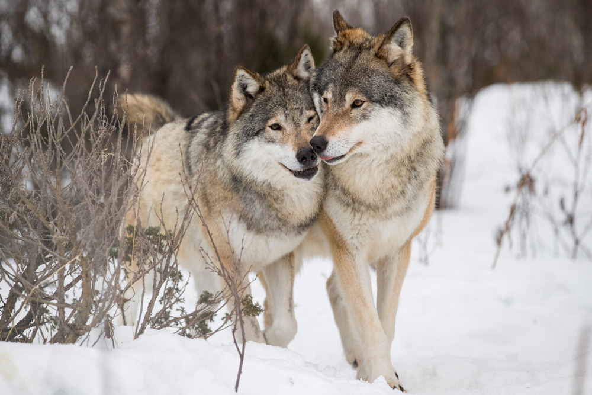
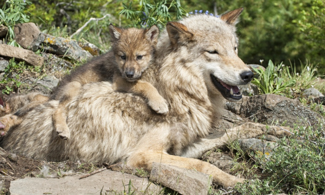
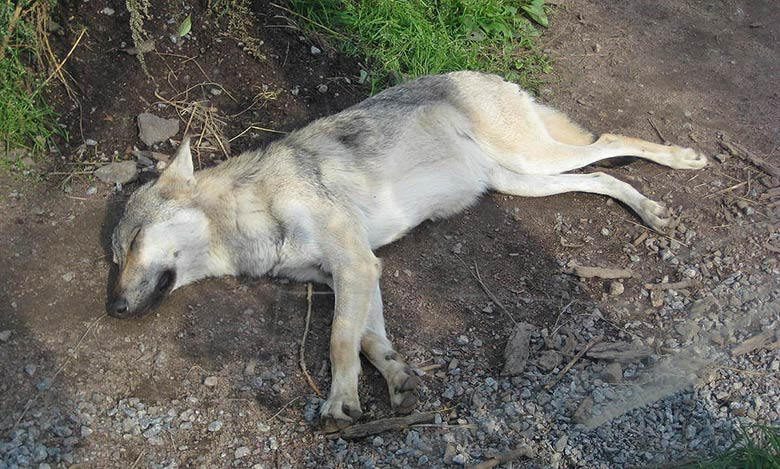
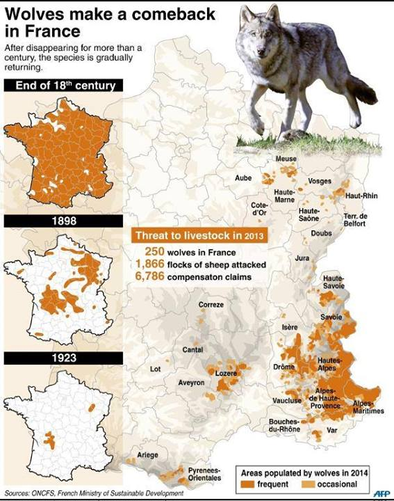

En règle générale, les loups vivent en meute, qui représente une cellule familiale. Celle-ci est menée par le couple dominant, appelé alpha. Eux seuls sont autorisés à se reproduire. Ils régissent tous les aspects de la vie de la meute : déplacements, chasse, etc. Le couple bêta, qui arrive en deuxième position dans la hiérarchie, prend le relais en cas de décès au sein du couple dominant. Viennent ensuite les subalternes, puis les louveteaux et louvards (loups âgés de moins d’un an), et enfin parfois l’oméga, un individu faible ou mal formé dont le statut est peu enviable. Les membres de la meute communiquent entre eux grâce à un langage corporel riche, impliquant différentes positions des oreilles, du corps, ainsi que le port de la queue et l’expression de la face. Le territoire d’une meute de loups couvre en moyenne une surface de 200 km², un chiffre variable selon la densité de gibier et la pression humaine.

Il adapte son alimentation aux proies disponibles. Lorsqu'il ne parvient pas à se nourrir de proies sauvages, telles que les ongulés souvent plus grands qu'eux : élan, renne, chevreuil, ses cibles dominantes, il est capable de jeûner pendant une semaine. Par facilité, il peut alors être conduit à s'en prendre au bétail domestique Un loup chasse quand il a faim, seul ou en meute, selon la saison et la taille de sa proie.

Les louveteaux naissent au printemps, après 60 jours de gestation. Les trois premières semaines, ils vivent dans une tanière avec leur mère, qui est nourrie par les membres de la meute. Lorsqu’ils sont assez grands pour sortir, l’éducation des louveteaux est assurée par la meute. Entre jeux et apprentissage des techniques de chasse, ils acquièrent petit à petit les réflexes et les comportements nécessaires à leur vie adulte. Entre un et cinq ans, ils quittent le plus souvent le groupe familial pour fonder leur propre meute.


| population | année |
|---|---|
| entre 320 et 400 | 2017 |
| 430 | 2018 |
| 921 | 2021 |

